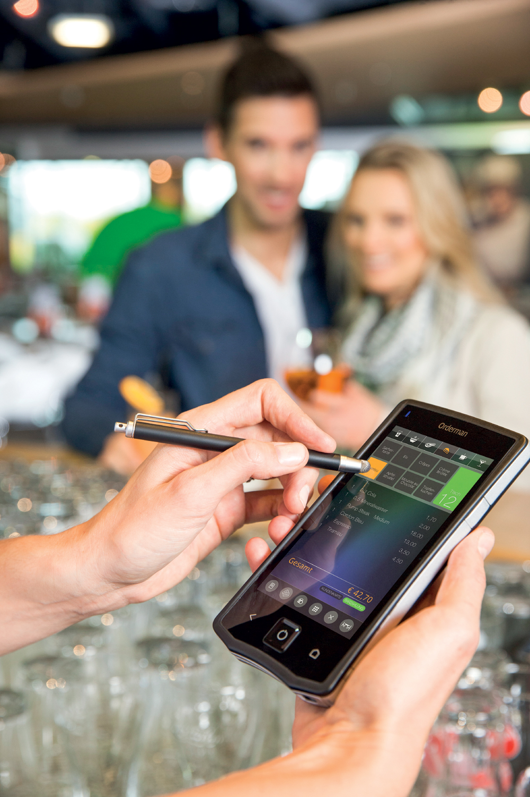

Orderman Wireless Orderman wireless
Point-of-sale solutions & services to empower restaurant profitability
Wireless Ordering and Payment Processing are Now on the Menu.
Orderman - the first radio ordering system specifically developed for the hospitality industry - has revolutionized the market. Orderman is the original. Since 1992, the system has been at the forefront of trends and innovations in hand-held solutions for stadiums, bars and nightclubs, restaurants, cafes and quick service establishments.
No other manufacturer has more experience.
No one else has sold more units. With good reason!
Everything you need to know about NCR Orderman in a nutshell:
- 25 years of hospitality industry know-how.
- Large selection of stationary POS terminals and mobile handhelds.
- Up to 6 years all-inclusive, no-hassle warranty for numerous products.
- Unique Orderman Secure Radio with unparalleled stability and range.
- Proven solutions in 55,000 hospitality installations.
- Available from 800 Orderman partners in 45 countries.
NCR Orderman7, our top-of-the-line handheld ordering device. Benefit from the latest technical features, which make radio ordering quick, reliable and user-friendly. With an extremely long operating time of up to 18 hours, the unit sets new benchmarks, for instance, with its bright 5” display, high-quality material, unrivaled strength and ease of use (shock-resistant and water-tight). The user friendly touch-screen that can be operated by finger or using a touch pen.
Radio ordering: Profit from our system.
Businesses of all sizes can benefit from using a radio ordering system. Efficiency and customer satisfaction increase, pay- and print-at-the-table functionality eliminates credit card security concerns, and overall more effective business processes lead to healthier, more robust businesses.
A radio ordering system is most effective where used to divide tasks between the sales and service personnel. In practice, this means that the sales specialists can stay with the guests, placing orders and taking payments – in short, keeping a firm grip on their field of responsibility at all times. They are supported by runners, who bring the orders to the guests and clear the tables after they leave, turning them faster and generating more revenue.
This approach to the job produces numerous benefits. Whichever way you look at it, the deployment of a radio ordering system pays off in a very short time.
Service specialists are able to remain just where they are needed most: with the guests. The result is less wasted effort, no crowding around a terminal - and more time to take orders, generate sales and help customers.
Time savings mean that waiters serve more people, and pay more attention to guests. Projected over the whole year, individual diners having an extra item or beverage makes a huge difference; sales increases of at least 10 percent are the norm. What's more, incorrect and missed orders become a thing of the past.
Word soon gets around that guests prefer establishments that use Orderman. Orders are served faster, there's no waiting for the bill and guests simply enjoy good food, good drinks and excellent service. When guests are happy they spend more, visit more often and recommend you to others.
In most restaurants, 80% of sales are made in 20% of the time. More efficient serving processes and greater continuity at the bar and in the kitchen are therefore invaluable. Fast, accurate billing at the diners' tables is another advantage: all meals and drinks are registered with precision, and a clearly itemized bill appears from a hip printer at the touch of a button. Nothing is missed and no payment errors are made.